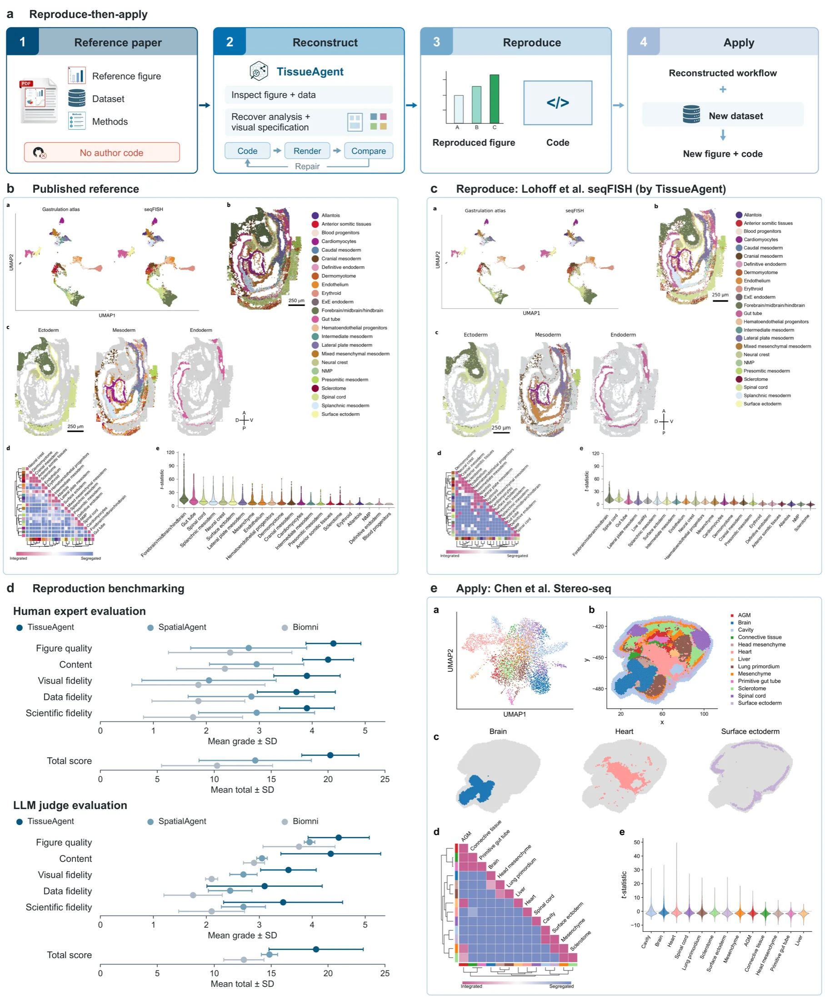

TissueAgent: A Role-Based
Multi-Agent Framework for Reproducible Spatial Transcriptomics
Workflows
TissueAgent: A Role-Based
Multi-Agent Framework for Reproducible Spatial Transcriptomics
Workflows
Abstract
Spatial transcriptomics (ST) profiles gene expression in situ, but analysis remains slow and hard to reproduce because workflows span heterogeneous platforms, file formats, and toolchains and often require substantial domain expertise and programming effort.
Here we present TissueAgent, a role-based multi-agent framework that turns open-ended natural-language ST requests and multimodal inputs (data, PDFs, images) into auditable, runnable workflows. A single evolving plan coordinates specialized agents and records rationales, step status, and artifact links, enabling transparent provenance and targeted replanning. TissueAgent uses self-evolving skills to distill execution traces, errors, and recovery strategies into reusable procedural knowledge, allowing workflows to improve across runs. By separating planning, recruitment, execution, evaluation, and reporting, TissueAgent is designed to improve reliability across heterogeneous, multi-stage analyses.
Across diverse ST datasets, TissueAgent generates reproducible notebooks and supports cell type and niche annotation, cell-type deconvolution, and cell-cell communication analysis, outperforming available baselines on key spatial tasks. In a reproduce-then-apply evaluation, TissueAgent reconstructs figure panels and recovers their underlying workflows from published studies using only text and images, without author-provided code, and transfers the recovered workflows to new datasets. TissueAgent also integrates external domain agents to support collaborative analysis. Together, TissueAgent enables reproducible end-to-end ST analysis and workflow reuse, helping bridge the gap between reading a spatial study and reusing its workflow in practice.
At a Glance
Framework Overview

Method
Modeled on how a biotech team handles an ST analysis request, TissueAgent plans the workflow, recruits specialists, coordinates execution, verifies intermediate and final outputs, and returns validated results. Implemented in LangGraph, it includes five orchestration agents and a suite of specialized expert agents, both internally developed and external, such as GeneAgent. A Copilot mode lets users inspect and interact with the workflow during execution; an Autopilot mode carries it out with minimal user intervention.
Planner
Converts the user request into a global plan with explicit steps and expected artifacts. Requests that can be answered immediately are handled directly, requests with insufficient information are returned to the user for clarification, and requests requiring multi-step analysis enter the planning workflow.
Recruiter
Assigns each step to an expert agent from the Agent Registry, together with relevant skills, and records the assignment rationale.
Manager
Oversees execution and determines whether each step succeeds, fails, or should be skipped. Expert agents operate in ReAct-style loops under Manager supervision, computing in Python and R and returning execution status, generated artifacts, and summaries of what succeeded or failed.
Evaluator
Checks whether intermediate and final outputs satisfy the user request, and routes the workflow either back to the Planner for targeted replanning or forward to the Reporter.
Reporter
Returns a concise summary together with a fully reproducible Jupyter notebook with explicit artifact paths and provenance.
Registries
Three complementary registries provide reusable knowledge at different levels of abstraction. The Plan Registry stores workflow templates from previously defined analyses, which the Planner retrieves when constructing a new plan. The Agent Registry catalogs internal and external expert agents and their capabilities, allowing the Recruiter to select an appropriate specialist for each step. The Skill Registry stores task-specific execution knowledge that is assigned alongside expert agents.
Structured Plan Updating
All agents read from and write to a single evolving plan, which serves simultaneously as a coordination protocol, shared memory, and provenance layer. The Planner records each step's name, rationale, and expected artifacts; the Recruiter appends the assigned expert agent and assignment rationale; the Manager records step status as succeeded, failed, or skipped, summarizes outcomes, and links generated artifacts to the relevant steps. The shared plan and role separation enable three layers of failure recovery: expert agents resolve local execution errors within their own loops, the Manager reruns a step whose approach is ineffective with revised inputs, tools, or strategies, and the Evaluator triggers replanning when the global plan falls short of the request.
Self-Evolving Skills
Whereas structured plan updating supports adaptation within a run, self-evolving skills accumulate reusable execution knowledge across runs. Execution experience is converted into persistent procedural knowledge through a Save–Extract–Distill–Approve–Commit cycle, and automated verification ensures that changes only ever occur in natural-language knowledge files.
-
1
Save
Every run records a full trace: code, outputs, errors, and recovery.
-
2
Extract
Mine traces for error–correction pairs, unresolved errors, and avoidable cost.
-
3
Distill
Group recurring errors across runs into candidate skill and plan updates.
-
4
Approve
A human reviewer gate approves or rejects each candidate.
-
5
Commit
Update the skill file with warnings, fixes, and checks.
Starting the cell–cell communication ensemble workflow from a deliberately minimal plan template, three optimizer rounds reduced mean token usage by 18.3% (12.0–24.5% per dataset) and mean wall-clock time by 36.8%, while all twelve runs across three datasets matched the expert reference exactly.
Experiments
We evaluate TissueAgent in three settings: reproducing published ST workflows and transferring them to new data, collaborating with externally developed agents, and end-to-end ST analysis across cell type and niche annotation, cell-type deconvolution, and cell-cell communication.
Reproduce-then-Apply · Lohoff et al. seqFISH → Chen et al. Stereo-seq
Papers often provide data and method descriptions but not runnable code. In the reproduce phase, TissueAgent reconstructs figure panels from a reference study using only text, reference images, and the original dataset; in the apply phase, it transfers the recovered workflow to a new dataset. As a stress test, we used panel 2E from Lohoff et al., a violin plot of gene-wise t-statistics that depends on a custom spatial heterogeneity score described in the Methods. Only TissueAgent and Biomni produced valid figures: TissueAgent reproduced all 22 cell types and closely matched the reference, whereas Biomni recovered 12. In blinded evaluation by three LLM judges and five domain experts, TissueAgent achieved higher aggregate scores than Biomni across all reviewers, with the largest gains in data and scientific fidelity.
Transferred to a Stereo-seq mouse embryo dataset from Chen et al., the recovered workflow recreated all five panels despite the change in technology and data format, and preserved key biological patterns such as surface ectoderm localized to the embryo periphery. In a second case study on high-grade serous ovarian cancer from Yeh et al., analyses reconstructed on the CosMx discovery dataset and transferred to the Visium validation dataset recovered the reported findings while the published validation figures were withheld from the agent.

| Agent | Cell types reproduced | Spearman ρ vs. original ordering |
|---|---|---|
| Biomni | 12 / 22 | ≈ 0.5 |
| SpatialAgent | Invalid figure | — |
| TissueAgent | 22 / 22 | ≈ 0.9 |
Table 1. Reproduction of panel 2E from Lohoff et al., a violin plot of gene-wise t-statistics across 22 cell types built on a custom spatial-heterogeneity score. Spearman ρ compares the reproduced and original cell-type orderings.
Controlled Reproduction with Simulated Ground Truth
Published figures do not always provide enough ground truth to tell whether a visually plausible reproduction also recovers the underlying biological signal. We therefore simulated spatial datasets with scDesign3 and scMultiSim for spatial cell-type composition, spatial niche identification, and ligand-receptor analysis. Ground-truth annotations were used only for evaluation. TissueAgent recovered the predefined biological quantities rather than merely reproducing the visual appearance of each reference panel.
| Task | Evaluation | TissueAgent |
|---|---|---|
| Spatial cell-type composition scDesign3 · 5 cell types, 120 locations | Reproduce the ground-truth composition map (mean Pearson r) | 1.000 |
| Reconstruct the cell2location analysis (mean r with true proportions) | 0.989 | |
| Spatial niche identification scDesign3 · 4 niches, 320 locations | Reproduce the predefined niche map (ARI) | 1.000 |
| Infer niches by spatial smoothing and Leiden clustering (ARI; reference workflow 0.949) | 0.981 | |
| Ligand-receptor analysis scMultiSim · 120 cells, 4 predefined LR pairs | Ground-truth pairs ranked in the top ten | 3 of 4 |
| Pairs shared with the reference top-ten ranking | 7 of 10 |
Table 2. Controlled reproduction on simulated spatial datasets. Ground-truth annotations were used only for evaluation and were not provided to the inference procedures.
Collaborating with External Agents (TissueAgent × GeneAgent, GeneGPT, CellVoyager)
The Agent Registry catalogs internally developed agents alongside externally developed ones, each with its role, capabilities, and I/O schema, so the Recruiter can route each subtask to the most appropriate specialist. On the developing human heart MERFISH dataset, we asked whether atrial fibroblasts in the AVN/AV ring cellular community exhibit a distinct developmental program. The Coding Agent performed differential expression, the external GeneAgent interpreted the marker genes as consistent with Cardiac Development and Remodeling, and the Hypothesis Critic Agent assessed the claim from the combined evidence, supporting a specialized, ECM-rich, conduction-associated state.
Recruitment through TissueAgent preserves each external agent's standalone performance. Recruited GeneGPT reached 79.1% overall accuracy on the 450 GeneTuring questions (77.6% when run directly), and recruited CellVoyager matched or exceeded direct CellVoyager on CellBench, with the Recruiter correctly selecting and invoking it in all 150 workflows.

| Task | # Questions | Direct GeneGPT | TissueAgent + GeneGPT | TissueAgent w/o Agent Registry |
|---|---|---|---|---|
| Gene alias | 50 | 76.0% | 76.0% | 84.0% |
| Gene disease association | 50 | 78.0% | 78.0% | 60.3% |
| Gene location | 50 | 56.0% | 46.0% | 64.0% |
| Human genome DNA alignment | 50 | 44.0% | 44.0% | 0.0% |
| Multi-species DNA alignment | 50 | 68.0% | 78.0% | 2.0% |
| Gene name conversion | 50 | 98.0% | 100.0% | 100.0% |
| Protein-coding genes | 50 | 92.0% | 96.0% | 86.0% |
| Gene SNP association | 50 | 100.0% | 98.0% | 100.0% |
| SNP location | 50 | 86.0% | 96.0% | 100.0% |
| Mean benchmark score | 450 | 77.6% | 79.1% | 66.3% |
Table 3. GeneTuring accuracy of direct GeneGPT, TissueAgent-recruited GeneGPT, and TissueAgent without Agent Registry access. Direct and recruited GeneGPT use the same LLM, prompt configuration, and tools. Bold marks the best score per task.
| Model | Micro-Avg | Macro-Avg |
|---|---|---|
| Direct CellVoyager | 69.48% ± 2.17% | 72.74% ± 1.57% |
| TissueAgent-recruited CellVoyager | 73.64% ± 2.77% | 75.85% ± 1.82% |
Table 4. Direct and TissueAgent-recruited CellVoyager on CellBench (50 published scRNA-seq studies, 483 held-out reference analyses), mean ± s.d. over three paired runs. Recruited proposals are scored directly, without additional critique or revision by TissueAgent.
Cell Type and Niche Annotation
For cell-type annotation, TissueAgent assesses the biological context, expression state, and method-suitability evidence to select one of three strategies: Harmony-based reference transfer from CZI CELLxGENE, pretrained CellTypist models, or reference-free, marker-based annotation with GPTCellType. For niche annotation, it configures UTAG from the data, summarizes each niche's cell-type composition and spatial features, and assigns an anatomical label with a brief biological justification.
Across developing human heart (MERFISH), ovarian cancer (Xenium), and mouse brain (Stereo-seq) datasets, TissueAgent achieves the best overall mean rank (1.33), followed by STAgent (2.92). On the developing heart it has the highest macro precision, balanced accuracy, and macro F1, improving identification of rare cell types, and in niche annotation it has the highest accuracy, balanced accuracy, and macro F1.

| Dataset | Method | Accuracy | Macro precision | Balanced accuracy | Macro F1 |
|---|---|---|---|---|---|
| Developing human heart (MERFISH) | CellTypist | 0.612 ± 0.005 | 0.307 ± 0.003 | 0.315 ± 0.003 | 0.239 ± 0.003 |
| GPTCellType | 0.801 ± 0.011 | 0.450 ± 0.014 | 0.351 ± 0.007 | 0.391 ± 0.009 | |
| Biomni | 0.768 ± 0.030 | 0.333 ± 0.053 | 0.268 ± 0.093 | 0.288 ± 0.074 | |
| SpatialAgent | 0.905 ± 0.006 | 0.558 ± 0.130 | 0.692 ± 0.138 | 0.552 ± 0.129 | |
| STAgent | 0.746 ± 0.167 | 0.592 ± 0.179 | 0.614 ± 0.150 | 0.568 ± 0.188 | |
| TissueAgent | 0.851 ± 0.007 | 0.596 ± 0.036 | 0.727 ± 0.061 | 0.616 ± 0.038 | |
| Ovarian cancer (Xenium) | CellTypist | 0.904 | 0.641 ± 0.004 | 0.599 ± 0.012 | 0.609 ± 0.012 |
| GPTCellType | 0.876 ± 0.014 | 0.552 ± 0.011 | 0.570 ± 0.043 | 0.546 ± 0.004 | |
| Biomni | 0.875 ± 0.025 | 0.557 ± 0.102 | 0.608 ± 0.092 | 0.573 ± 0.100 | |
| SpatialAgent | 0.382 ± 0.006 | 0.297 ± 0.005 | 0.455 ± 0.035 | 0.334 ± 0.006 | |
| STAgent | 0.718 ± 0.145 | 0.627 ± 0.022 | 0.658 ± 0.093 | 0.598 ± 0.041 | |
| TissueAgent | 0.907 ± 0.004 | 0.660 ± 0.029 | 0.618 ± 0.035 | 0.626 ± 0.031 | |
| Mouse brain (Stereo-seq) | CellTypist | 0.313 ± 0.004 | 0.393 ± 0.024 | 0.200 ± 0.007 | 0.214 ± 0.010 |
| GPTCellType | 0.492 ± 0.070 | 0.281 ± 0.039 | 0.253 ± 0.042 | 0.228 ± 0.035 | |
| Biomni | 0.427 ± 0.207 | 0.187 ± 0.079 | 0.172 ± 0.019 | 0.135 ± 0.057 | |
| SpatialAgent | 0.455 | 0.102 ± 0.009 | 0.130 ± 0.003 | 0.112 ± 0.005 | |
| STAgent | 0.327 ± 0.124 | 0.327 ± 0.057 | 0.315 ± 0.028 | 0.249 ± 0.067 | |
| TissueAgent | 0.496 ± 0.004 | 0.352 ± 0.004 | 0.313 ± 0.001 | 0.320 ± 0.001 |
Table 5. Cell-type annotation benchmark, mean ± s.d. across three runs where available. Bold marks the best mean for each metric within each dataset.
| Dataset | Method | Accuracy | Macro precision | Balanced accuracy | Macro F1 |
|---|---|---|---|---|---|
| Developing human heart (MERFISH) | Biomni | 0.490 ± 0.022 | 0.607 ± 0.029 | 0.613 ± 0.046 | 0.596 ± 0.038 |
| SpatialAgent | 0.660 ± 0.307 | 0.728 ± 0.027 | 0.571 ± 0.286 | 0.593 ± 0.216 | |
| STAgent | 0.782 ± 0.015 | 0.670 ± 0.019 | 0.652 ± 0.019 | 0.639 ± 0.016 | |
| TissueAgent | 0.827 ± 0.004 | 0.719 ± 0.007 | 0.757 ± 0.009 | 0.729 ± 0.008 | |
| Ovarian cancer (Xenium) | Biomni | 0.899 ± 0.006 | 0.625 ± 0.109 | 0.518 ± 0.034 | 0.535 ± 0.032 |
| SpatialAgent | 0.755 ± 0.020 | 0.558 ± 0.006 | 0.601 ± 0.040 | 0.541 ± 0.004 | |
| STAgent | 0.872 ± 0.029 | 0.604 ± 0.052 | 0.466 ± 0.052 | 0.492 ± 0.063 | |
| TissueAgent | 0.899 ± 0.037 | 0.554 ± 0.023 | 0.556 ± 0.009 | 0.554 ± 0.010 |
Table 6. Spatial niche annotation benchmark, mean ± s.d. across three seeds. Bold marks the best mean for each metric within each dataset.
Cell-Type Deconvolution
When no method is specified, an LLM-based router examines the structure of the spatial dataset, its compatibility with the reference, count representation, spatial coordinates, dataset scale, and computational resources, then selects among cell2location, NNLS, Tangram, CARD, SD2, and STdeconvolve and tunes dataset-specific hyperparameters on pseudospot trials. On Visium left-atrial sections from a human cardiac atlas, TissueAgent retrieved a matched CELLxGENE reference of about 486,000 cells, and marker genes correlated significantly more strongly with the inferred abundances than background genes. In quantitative benchmarks it achieved the strongest composite score on Visium DLPFC, where it selected and tuned cell2location, and on MERFISH-derived spots, where its router selected NNLS at every resolution, and it was the only agent to complete every run.

| Benchmark | Method | RMSE ↓ | JSD ↓ | Pearson r ↑ | Score ↑ | Completion ↑ |
|---|---|---|---|---|---|---|
| Visium DLPFC | NNLS | 0.352 | 0.247 | 0.300 | 68.35 | — |
| CARD | 0.344 | 0.332 | 0.223 | 64.50 | — | |
| Tangram | 0.318 | 0.258 | 0.330 | 69.62 ± 0.02 | — | |
| cell2location | 0.303 | 0.221 | 0.422 | 72.88 ± 0.02 | — | |
| Biomni | 0.349 ± 0.009 | 0.259 ± 0.036 | 0.242 ± 0.117 | 67.09 ± 3.40 | 60% | |
| SpatialAgent | 0.321 ± 0.015 | 0.286 ± 0.032 | 0.318 ± 0.113 | 68.40 ± 2.57 | 60% | |
| STAgent | 0.346 ± 0.015 | 0.259 ± 0.046 | 0.203 ± 0.108 | 66.55 ± 3.74 | 80% | |
| TissueAgent | 0.303 | 0.221 | 0.422 ± 0.001 | 72.90 ± 0.03 | 100% | |
| MERFISH | NNLS | 0.152 | 0.102 | 0.789 | 88.02 | — |
| CARD | 0.234 | 0.302 | 0.677 | 76.75 | — | |
| Tangram | 0.224 | 0.233 | 0.586 | 77.88 ± 0.01 | — | |
| cell2location | 0.208 ± 0.001 | 0.277 ± 0.002 | 0.758 ± 0.001 | 79.78 ± 0.09 | — | |
| Biomni | 0.229 ± 0.105 | 0.285 ± 0.297 | 0.572 ± 0.376 | 75.76 ± 19.54 | 80% | |
| SpatialAgent | 0.288 ± 0.099 | 0.366 ± 0.270 | 0.457 ± 0.241 | 69.14 ± 15.72 | 73.3% | |
| STAgent | 0.193 ± 0.066 | 0.193 ± 0.143 | 0.697 ± 0.222 | 82.10 ± 10.51 | 80% | |
| TissueAgent | 0.152 | 0.102 | 0.789 | 88.02 | 100% |
Table 7. Spatial deconvolution benchmark and agent task-completion rates. The composite performance score (0–100) combines RMSE, Jensen–Shannon divergence, and Pearson correlation. Agents were run five times per condition; non-agent methods are deterministic. Bold marks the best mean per metric within each benchmark.
Cell-Cell Communication
Because no single ligand-receptor scoring method is authoritative, TissueAgent runs a consensus ensemble of LIANA+, stLearn, COMMOT, and decoupleR and aggregates within-method percentile ranks into one consensus ranking. On three datasets derived from SpatialCCCbench, it achieved the highest spatial coherence and the strongest cell-type adjacency of any agent, and was the most reproducible and reliable (Figure 5f).
In an Alzheimer's disease cohort from Miyoshi et al., TissueAgent identified stage-dependent interactions, such as GRN-EGFR emerging in early AD and AD but not in controls, cross-checked top-ranked pairs against the literature, and assigned each a 0–5 literature-support score. These scores correlated with independent AD evidence from Open Targets and Europe PMC (Spearman ρ = 0.31–0.39, p < 0.02, n = 60 pairs).
| Method | Reproducibility (top-K overlap) | Reliability (valid outputs) |
|---|---|---|
| GPT-5.1 | 0.01 | 89% |
| Biomni | 0.38 | 42% |
| SpatialAgent | 0.83 | 60% |
| STAgent | — | 10% |
| TissueAgent | 1.00 | 100% |
Table 8. Operational axes of the cell-cell communication benchmark on human DLPFC Visium, human lymph node Visium, and mouse hypothalamic MERFISH. Reproducibility is the top-K overlap across repeated runs; reliability is the fraction of attempts that produce a well-formed LR output within a fixed budget. GPT-5.1 selected a different method on nearly every run.